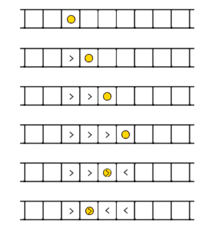

Snow Footprints
There is a straight snowy road, divided into n blocks. The blocks are numbered from 1 to n from left to right. If one moves from the i-th block to the (i + 1)-th block, he will leave a right footprint on the i-th block. Similarly, if one moves from the i-th block to the (i - 1)-th block, he will leave a left footprint on the i-th block. If there already is a footprint on the i-th block, the new footprint will cover the old one.

At the beginning, there were no footprints. Then polar bear Alice starts from the s-th block, makes a sequence of moves and ends in the t-th block. It is known that Alice never moves outside of the road.
You are given the description of Alice’s footprints. Your task is to find a pair of possible values of s, t by looking at the footprints.
Input:
The first line of the input contains integer n (3 ≤ n ≤ 1000).
The second line contains the description of the road — the string that consists of n characters. Each character will be either “.” (a block without footprint), or “L” (a block with a left footprint), “R” (a block with a right footprint).
It’s guaranteed that the given string contains at least one character not equal to “.”. Also, the first and the last character will always be “.”. It’s guaranteed that a solution exists.
Output:
Print two space-separated integers — the values of s and t. If there are several possible solutions you can print any of them.
範例:
input:
1 | 9 |
output:
1 | 3 4 |
input:
1 | 11 |
output:
1 | 7 5 |
Note:
The first test sample is the one in the picture.
題意:
輸入一串腳印，問你其中一種可能的起點跟終點是多少？
思路:
● 分析一下可以得知實際上只會有三種模式
- 只有R
- 只有L
- 左邊任意個R接右邊任意個L。
● 先記錄R區間跟L區間的頭尾，沒有L區間就是模式1，直接輸出答案；沒有R區間就是模式2，直接輸出答案；兩個都有就視為從最左邊走到最右邊再走回來到交界。